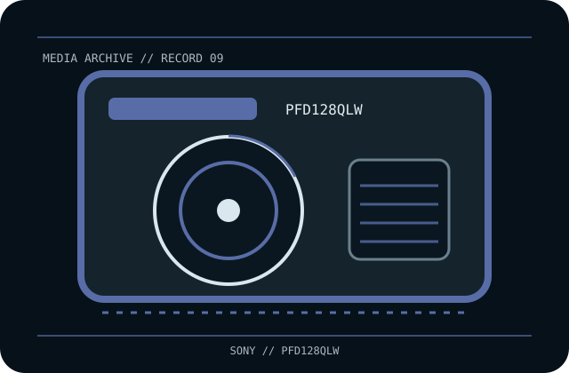

[ REMOVABLE MEDIA // OPTICAL CARTRIDGE ]
Sony XDCAM Professional Disc 128 GB Quad Layer WORM (PFD128QLW)
Sony XDCAM Professional Disc quad-layer write-once/read-many (WORM) optical cartridge, model PFD128QLW. This record identifies the media only; drive, host interface, firmware, software and any enclosure are separate.

EXACT SKU: Sony PFD128QLW. The record distinguishes nominal uncompressed capacity from any compressed estimate and documents generation-specific host compatibility.
Format generation, capacity and compatible drives
| Manufacturer / exact SKU | Sony PFD128QLW |
|---|---|
| Format / generation | Sony XDCAM Professional Disc quad-layer write-once/read-many (WORM) optical cartridge, model PFD128QLW. |
| Native capacity | 128 GB nominal native capacity, quad layer. |
| Compressed capacity | Not applicable as an optical-media rating; file compression is external and cannot increase guaranteed medium capacity. |
| Compatible drive generations | XDCAM Professional Disc drive/deck must explicitly support 128 GB quad-layer PFD media and WORM. PDW-U4 and specifically qualified XDS/PDW systems are candidates; older single-/dual-layer devices are not presumed compatible. Confirm exact firmware and product manual. |
| Interface and scope | The cartridge/disc has no direct host-computer interface. The compatible drive supplies its own SAS, Fibre Channel, SCSI, USB or other host connection; check the exact drive specification and driver/software chain. |
| Compatibility caveat | PFD128QLW is a quad-layer WORM SKU—not the 100 GB triple-layer PFD100TLA, 50 GB rewritable PFD50DLA, or consumer Blu-ray media. WORM does not make a single cartridge immune to loss or guarantee decades of readable data. |
Optical-cartridge handling and preservation
Keep the cartridge closed in its case; protect it from dust, direct sunlight, high temperature, moisture, shock and abrasion. Do not force into a drive or open the housing. Because WORM content cannot be overwritten, validate the intended archive, metadata, and checksum before recording; maintain independent verified copies.
- Document the exact printed model, serial/batch or date code, write-protect/WORM status and source of the medium.
- For valuable data, keep at least two independently verified copies, record checksums, test restoration and plan migration before compatible hardware becomes unavailable.
Model-specific preservation and compatibility notes
Preservation note: a nominal capacity or WORM property does not establish future readability; retain supported drives, software and independent copies.
PFD128QLW is a quad-layer WORM SKU—not the 100 GB triple-layer PFD100TLA, 50 GB rewritable PFD50DLA, or consumer Blu-ray media. WORM does not make a single cartridge immune to loss or guarantee decades of readable data. Never infer interoperability from a similar cartridge shell, connector, brand or family name; confirm drive-generation support in the exact manufacturer's manual.
Manufacturer and archival references
- Sony — Professional Disc lineup catalogueManufacturer-hosted generation and capacity lineup including quad-layer media.
- Sony Professional — PDW-U4 disc driveManufacturer compatibility context for newer-layer Professional Disc systems.
- Sony Professional Disc system manual — Internet ArchiveArchival operating reference for the XDCAM optical disc system; exact model firmware remains controlling.
Capacity, compatibility and handling are specific to this model and its supported drive generation. For legacy equipment, preserve the manual and test an end-to-end read before relying on the cartridge for migration.